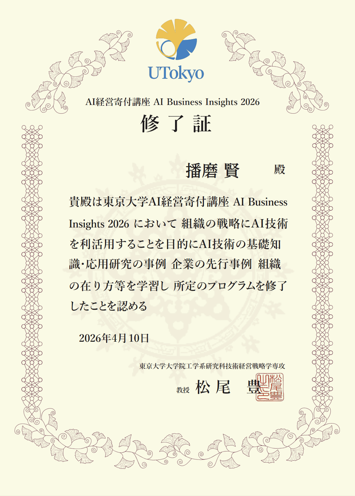

経歴 Experience & Education
ダイキン工業株式会社 Daikin Industries, Ltd.
DX推進部 DX Promotion Department
早稲田大学 社会科学部 Waseda University
学士（社会科学） B.A. in Social Sciences, School of Social Sciences
Exploreマンハイム大学 社会科学部 University of Mannheim
社会学科｜ドイツ｜交換留学 Dept. of Sociology / Exchange Program (Germany)
Explore広尾学園 中学校・高等学校 Hiroo Gakuen Junior & Senior High School
View History自己研鑽 Professional Development
サーティフィケイト Certificate

AI経営寄付講座
「AI Business Insights 2026」修了
AI Business Insights 2026
Program Completion
AI技術を組織戦略へ接続し、現場で動く意思決定に変えるためのアプローチを体系的に習得。 Systematically studied how AI can be integrated into organizational strategy to drive real-world decision-making.
プロフィール Profile
The Origin
シンガポール生。日本とマレーシアの家庭に育ち、ドイツで1年を過ごしました。国と文化を跨ぐたび、「異なる文脈を繋ぐ」ことの難しさと価値を肌で感じてきました。早稲田大学・独マンハイム大学で社会学と哲学を学ぶ中で、かつて私はデータが示す「正解」を現場に押し通し、関係者の納得を得られずプロジェクトを停滞させた経験があります。数字は嘘をつかない——しかし、数字だけでは国境も、部門も、人の心も越えられない。この原体験から、複雑な事象を誰もが「腹落ちする言葉」へ変換し、組織に意思決定の軸を与えることを、自分の役割として捉えています。
Born in Singapore, I was raised in a Japanese–Malaysian household and spent a year in Germany. Moving across national and cultural boundaries has taught me firsthand both the difficulty and the value of bridging different contexts. While studying Sociology and Philosophy at Waseda University and the University of Mannheim, I faced a defining failure: I once forced a data-driven "correct answer" onto a team without earning their buy-in, causing the project to stall. Numbers do not lie—but numbers alone cannot cross borders, organizational silos, or human hearts. That experience forged my core mission: to translate complexity into narratives that truly resonate, providing organizations with a clear axis for decision-making.
次に実装したいこと What I Want to Build Next
「10年後の1万人」を、
意思決定の単位にする。
四半期の数字を追う手を止めるつもりはない。ただ、その判断がどれだけの人の選択肢を、どれだけの期間にわたって増やすかを同時に問い続ける——これを自分の仕事の最小単位にしたい。
善意の量ではなく、1円あたり・1時間あたりのインパクトを最大化する。効果的利他主義（Effective Altruism）のこの原則は、そのまま事業における投資判断の言語になる。
どの市場に出るか、どの技術に賭けるか、誰と組むかあらゆる意思決定に「短期収益×長期受益者数」の複眼を実装すること。 それが、倫理を競争優位に変える第一歩だと考えている。
正しいから、儲かる。
儲かるから、続く。
続くから、届く。
目の前の事業成長にコミットしながら、このサイクルを社会に実装していくことが、私の次なる目標だ。
Making "10,000 People in 10 Years" the Standard of Decision-Making.
I won’t stop driving quarterly results. But I want the true measure of my work to be consistently asking: how many people's options will this decision expand, and for how long?
It’s not about the volume of good intentions; it’s about maximizing impact per dollar and per hour. This principle of Effective Altruism translates seamlessly into the language of business investment.
Which markets to enter, which technologies to back, whom to partner with—I aim to evaluate every choice through the dual lens of "Short-Term Revenue × Long-Term Beneficiaries." I believe this is how we turn ethics into a sustainable competitive edge.
Because it is right, it profits.
Because it profits, it endures.
Because it endures,
it delivers impact.
My next objective is to embed this cycle into the real world, without ever losing sight of immediate business growth.
コンピテンシー Key Competencies
Narrative Architecture
正しさよりも、納得を設計する Designing for Conviction, Not Just Correctnessn
ナラティブとは、いわば「認識の設計」である。高度に抽象的な概念やジャーゴン、無機質なデータを、相手が自らの文脈の中で納得できる「意味の構造」へと再構築する営みである。哲学的思考、社会学的洞察、美学を土台に、「正しさ」を提示するのではなく、他者の中に「納得」が立ち上がる構造を設計する。共感と、人が自ら動き出す力は、その先に生まれる。
Narrative is, in essence, the design of perception. It is the work of re-forming highly abstract concepts, jargon, and inert data into structures of meaning that others can make sense of within their own context. Grounded in philosophical thinking, sociological insight, and aesthetics, it does not merely present what is “correct,” but designs the conditions in which conviction emerges within the other. Empathy, and the will to move, are born beyond that point.
Decision Science
不確実性の中で、判断を設計する Designing Judgment Under Uncertainty
ポーカーを、ゲーム理論と確率論の実験室として読んできた。不完全情報下で、感情ではなく期待値を起点に判断を積み重ねる訓練を重ねてきた。欧州8都市での実践を通じて磨かれたこの判断構造は、完全な情報が揃うのを待たずに動くための、意思決定の基盤となっている。
I have read poker as a laboratory for game theory and probability. Under conditions of incomplete information, I have trained myself to build judgment not from emotion, but from expected value. Refined through practice across eight cities in Europe, this structure of judgment has become a foundation for making decisions without waiting for complete information.
Linguistic OS
6言語の運用レンジ Six-language operating range
コア運用領域 Primary Core
拡張運用領域 Expanded Range
Philosophy & Ethics
哲学的思考と実存の探求 Ethical Judgment
AGI/ASIが人間の知性そのものを置き換えはじめる地平で、「尊厳」「労働」「判断」「他者との関係」──何が機械に委ねられ、何が委ねられてはならないのかを根底から問い直す。技術は人間を高めうると同時に、人間性を希薄化させうる──この両義性から目を逸らさず、倫理を事後の監査ではなく設計の前提として組み込む。効率の最適化と、人間の生の意味とのあいだに確かな判断軸を引き、技術が人を縮減せず拡張するための意思決定をリードする。
As AGI and ASI begin to displace human intelligence itself, I examine from first principles the boundaries of dignity, labor, judgment, and our relations with others: what can be entrusted to machines, and what must not be. Technology can elevate humanity, yet it can also thin out what makes us human. Without looking away from this duality, I embed ethics not as a post-hoc audit, but as a design prerequisite. Between the optimization of efficiency and the meaning of human life, I draw a clear axis of judgment — leading decisions that ensure technology expands, rather than diminishes, human possibility.
主要プロジェクト・受賞歴 Selected Projects & Awards
ナラティブ・文学 Narrative & Literature
第3回
有吉佐和子文学賞
3rd Sawako Ariyoshi Literary Award
実家から届いた筑前煮を温め直す深夜の三十分。ものと身体のあいだで音もなく起こる、微かな認識の組み換えを描いた短編小説『十月二十五日の筑前煮』。応募総数1,314作品の中から「佳作」を受賞。 Thirty late-night minutes spent reheating chikuzenni sent from my family home. Chikuzenni on October 25 is a short story that depicts a quiet, subtle reconfiguration of perception taking place between objects and the body. It received an Honorable Mention, selected from among 1,314 submissions.
第36回
「働くってなんだろう」
エッセイコンテスト
36th
“The Essence of Work”
Essay Contest
早朝の新宿で目にした、散乱するゴミを黙々と片づける清掃員の姿。その記憶を起点に、見過ごされがちな労働のなかにある尊厳と愛を描いたエッセイ。応募総数1,112作品の中から「特選」に選出。 At daybreak in Shinjuku, I saw trash scattered across the streets and people quietly cleaning it up. Beginning from that memory, this work portrays the dignity and love embedded in labor that so often goes unnoticed. Selected for the Special Prize from among 1,112 submissions.
第37回
黒羽芭蕉の里全国俳句大会
37th Kurobane Bashō no Sato
National Haiku Contest
雪解川の流れのなか、名もない石のひとつが、一瞬だけ日を返す。移ろう水とそこに留まる石、その接点に生じた小さな光を詠んだ一句。総投句数2,431句の中から「佳作」に選出。 In the current of a snowmelt river, one nameless stone briefly returns the sunlight. A haiku capturing the small gleam where moving water meets a stone that remains. Selected for an Honorable Mention from 2,431 submitted haiku.
雪解川 石のひとつが 日を返す
Snowmelt river— one stone among them returns the sun.
事業戦略・企画推進 Strategy & Execution
野口ゼミ x 理想科学工業株式会社
マーケティング戦略コンペティション
Noguchi Seminar x Riso Kagaku Corp.
Marketing Strategy Competition
SNSデータの多変量解析を通じて、感覚に依存しない「勝ち筋」を抽出。製品特性と市場ニーズを接続し、根拠あるプロモーション戦略として提案。 Used multivariate analysis of social media data to identify evidence-based success patterns. Connected product characteristics with market demand to formulate a grounded promotional strategy.
第6回 創造力、無限大
高校生ビジネスプラン・グランプリ2018
6th High School Business Plan Grand Prix 2018
学習行動の継続を支援するプロダクト構想を企画・設計。応募4,359件中トップ100入賞、都大会では東京都産業労働局長賞を受賞。 Conceived and designed a product-centered business plan aimed at supporting sustained study habits. Selected among the Top 100 out of 4,359 entries.
早稲田大学 社会科学部
「社会デザイン論入門」レポートコンペティション
Waseda Univ. "Social Design 101" Report Competition
コワーキングスペースにおけるユーザーと運営者間の構造的非対称性に着目し、DAO型ガバナンスによる解決モデルを提案。技術トレンドの追随ではなく、社会構造の再設計という視座が評価された。 Focusing on the structural asymmetry between users and operators in coworking spaces, I proposed a DAO-based governance model as a potential solution. The work was recognized for approaching the issue as a redesign of social structure.
早稲田大学 x PIVOT株式会社
共同プロジェクト｜実行委員
Waseda Univ. x PIVOT Inc. Project Executive Committee
PIVOTと早稲田大学の公開収録企画において、企業・大学間の折衝から当日運営までを統括。多様な制約を調整しながら、約200名規模のイベントを実現。 Led coordination for a live recording project between PIVOT and Waseda University, overseeing negotiations, stakeholder alignment, and on-site execution. Delivered an event of roughly 200 attendees.
応用意思決定 Applied Decision-Making
ゲーム理論実践検証（ポーカー日本大会） Game Theory in Practice (Japan Poker Tournament)
国内最大級のトーナメントフィールドにおいて、GTO（ゲーム理論最適戦略）とICM（独立チップモデル）を基盤に状況適応的な意思決定を実践。 Applied GTO and ICM in one of Japan’s largest tournament fields, combining theoretical discipline with adaptive decision-making. Translated structured observation and probabilistic judgment into repeatable competitive results.
次のフェーズへ。 The Next Step.
まだ名前のついていない椅子から、
おたよりをください。
From a chair as yet unnamed,
send me word.